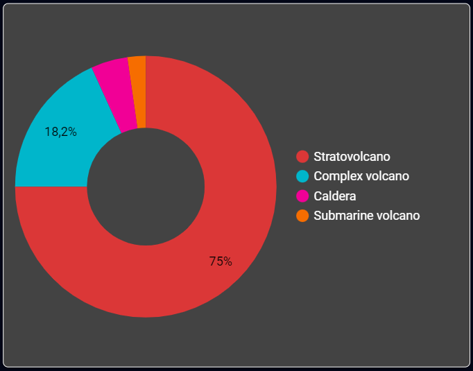

Jumlah Erupsi
Dalam Visualisasi Data Gunung Berapi di Indonesia, data yang dikumpulkan adalah selama periode 710 tahun. Pada visualisasi diatas, Merapi merupakan gunung paling banyak terjadi erupsi yaitu sebanyak 28 kali erupsi, di nomor dua terdapat Gunung Semeru dengan total 24 kali erupsi dan nomor tiga Gunung Kelut menjadi yang terbanyak ketiga terjadinya erupsi. Diantara 10 besar gunung berapi paling sering erupsi, sebanyak 80% merupakan gunung bertipe Stratovolcano, dan 10% bertipe Complex Volcano, 10% lainnya bertipe Caldera.

Tipe Gunung
Pada data visualisasi diatas, sebanyak 75% tipe gunung di Indonesia adalah Stratovolcano, sedangkan 18,2% tipe gunung di Indonesia adalah Complex Volcano, dan 4,5% tipe gunung di Indonesia adalah Caldera, serta sisanya sebanyak 2,3% tipe gunung di Indonesia adalah Submarine Volcano.

Jumlah Korban
Jumlah kematian yang disebabkan oleh erupsi/letusan gunung berapi pada Visualisasi Data Gunung Berapi di Indonesia. Pada visualisasi diatas, total kematian terbanyak disebabkan oleh Gunung Kelut sebanyak 15.460 korban, nomor dua terdapat gunung Tambora sebanyak 11.000 korban jiwa, dan urutan ketiga Gunung Awu sebanyak 8.330 korban. Dari total 10 besar kematian tertinggi, sebanyak 90% merupakan gunung bertipe Statovolcano dan 10 % bertipe gunung Caldera.

Tingkat Ledakan VEI
Pada Dashboard Visualisasi Data Gunung Berapi di Indonesia, selama periode 710 tahun tingkat ledakan tertinggi dipegang oleh Gunung Tambora dengan Score VEI (Volcanic Explosivity Index) 7 dan ledakan tinggi kedua ada gunung Krakatau dengan score VEI 6.

Korelasi Korban Kematian
Pada Visualisasi diatas, terlihat korelasi/hubungan antara korban kematian dengan tinggi gunung dan kematian setiap tahunnya. Dimana dari tahun 1311 hingga 1925 korban sebanyak 52.350 dengan erupsi berjumlah 81 kali, berbanding terbalik dari tahun 1926 hingga 2021 jumlah korban sebanyak 4.810 dengan erupsi yang lebih banyak yaitu 117 kali. Banyaknya korban di zaman dahulu dibanding sekarang walaupun erupsi lebih sedikit disebabkan beberapa hal, pertama mungkin banyak data erupsi yang tidak terdata di tahun-tahun dahulu, kedua teknologi mengenai peringatan akan gunung erupsi/meletus belum secanggih saat ini, ketiga kepekaan masyarakat terhadap gunung yang erupsi/meletus belum sebaik sekarang, keempat meletusnya gunung-gunung purba dahulu memang sangat dahsyat hingga banyak sekali korban.